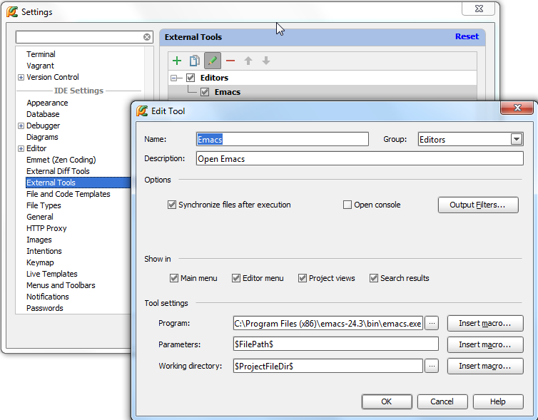
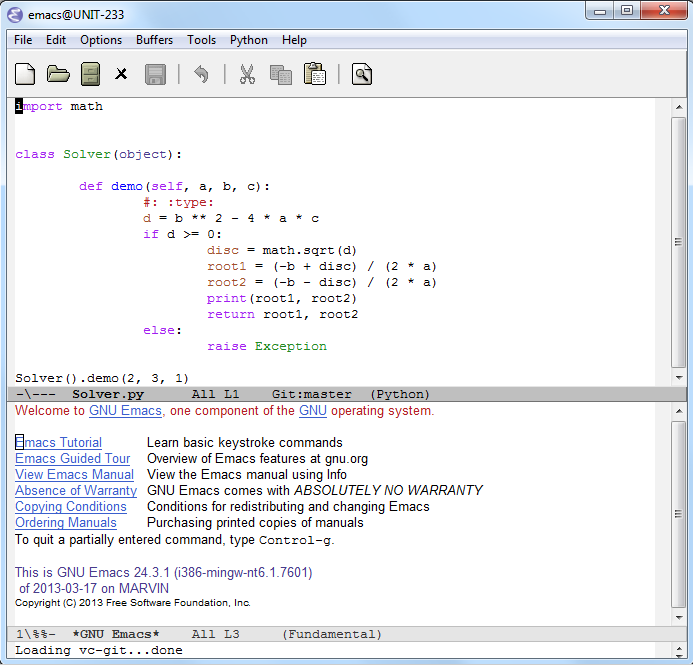
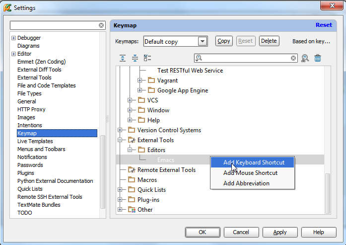
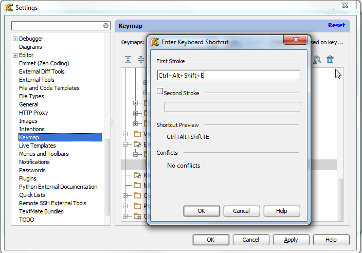
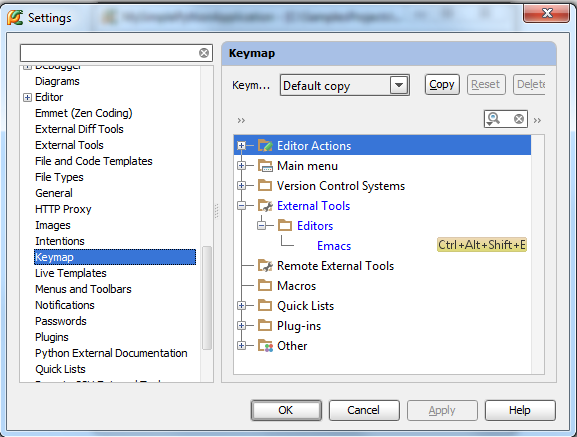

最全Pycharm教程（42）——Pycharm扩展功能之Emacs外部编辑器
1、主题
介绍如何将Emacs定义为一个Pycharm外部编辑器。
2、准备工作
（1）Pycharm版本为2.7或更高
（2）下载了downloadedEmacs并正确安装
3、配置Emacs
打开设置对话框，在IDE settings节点下，打开 External tools页，确认Emacs的安装情况。
首先，在 External tools页，单击绿色加号，打开 Create/Edit tool dialog box对话框：
做以下工作：
（1）输入工具名（Emacs）、简要描述（open Emacs）
（2）指定出现的菜单栏工具组。这里放到Editors菜单组中，也可以放到主菜单栏
（3）取消Open console勾选
（4）定义Emacs二进制文件位置，可以手动输入也可以浏览选择
（5）在Parameters栏输入默认打开的文件路径$FilePath$
（6）指定工作目录（例如$ProjectFileDir$）
（7）单击OK

设置生效。
4、在Emacs中打开当前文件
单击Tools菜单栏中的Editors节点中的Emacs命令：

打开open a file in the PyCharm editor对话框，在Tools菜单，选择Editors→Emacs：

5、指定快捷键
打开设置对话框，在Keymap页的下拉列表中找到External Tools节点，展开Editors，右击Emacs节点，选择Add keyboard shortcut：

打开Enter keyboard shortcut 对话框，这里输入Ctrl+Alt+Shift+E组合：

没有提示冲突，单击OK按钮，快捷键设置完成：
